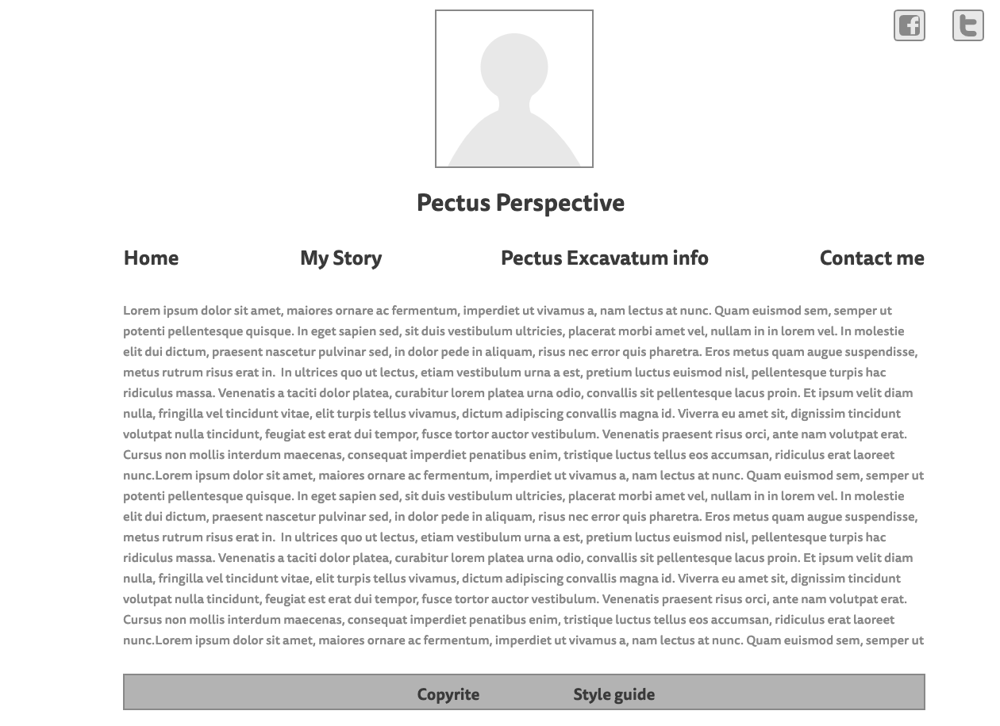
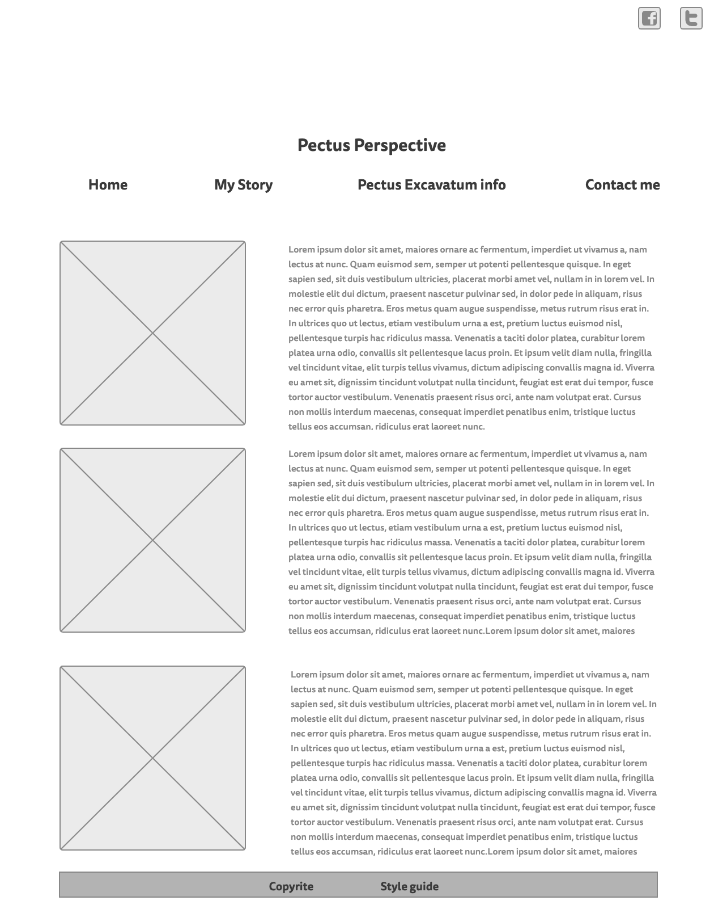
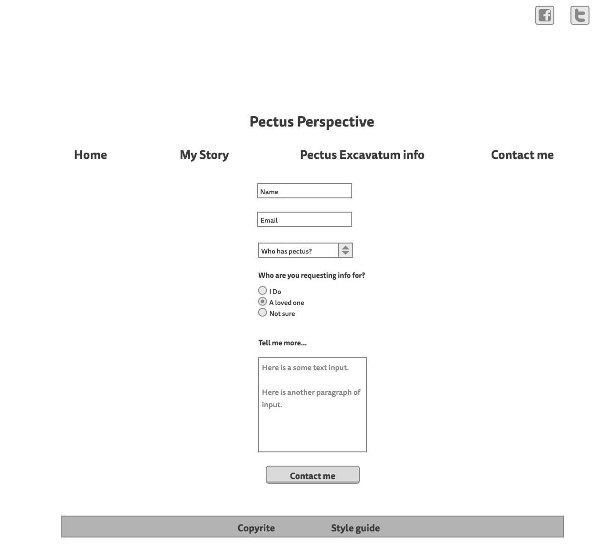

Overview
Purpose
Have you ever felt completely alone? That is how I felt when I found out my declining health is caused by pectus excavatum, a chest wall deformity. There are not as many women as men who have it and most who chronicle their journey are younger males. I longed to find stories of women like me who need surgery. I can provide personal experience, information, encouragement and hope through articles and video log of my experience. My site, Pectus Perspective will chronicle my experience and journey.
Audience
Pectus Perspective is for mature women with pectus excavatum looking for information and hope. They looking for someone who has been through the process diagnosis and treatment. They want to know options and outlook. They are between 30 to 70 years of age. Pectus Perspective users are health conscious and active, despite being compromised. They are looking for connection, community and education.
Style Guide
Color Palette
| Primary | Secondary | Accent 1 | Accent 2 |
|---|---|---|---|
| #F2F2F2 | #D9D5D2 | #73605A | #545928 |
Typography
Header Font: EB Garamond
This font is serif font with a bookish feel. It is retro but not old fashioned. It has a familiar, comfortable feel. This fits for older readers who are looking for to connect with information in an encouraging format.
Heading Font: EB Garamond
Paragraph Font: Courier Prime
Headings will also be EB Garamond for cohesive look. Paragraphs are a monospaced font that is old fashioned but with a fresh feeling. It is easy to read and less formal to invite the reader in to a more personal experience.
Normal paragraph example
Pectus excavatum is a congenital chest wall deformity in which the sternum is concave and the chest caves inward, sometimes called a funnel chest or inverted sternum. While often visible at birth it is may worsen during adolescence. For some it is not symptomatic. For others whose condition is more severe it may cause wheezing or coughing, fatigue and decreased excercise tolerance.
Navigation
Site Map
Wireframes

